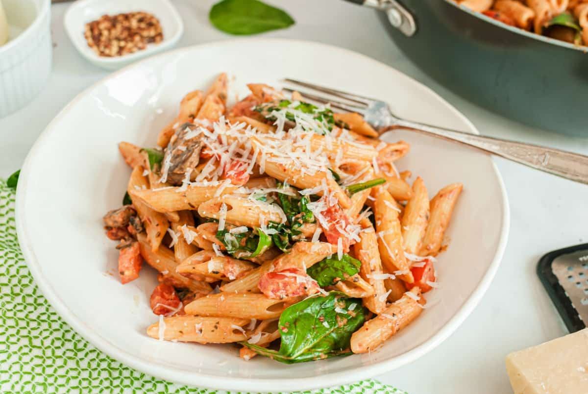

Penne Rosa

Description
Creamy tomato pasta dish.
Lots of protein and simply delicious.
Ingredients
- Penne Pasta Noodles
- Sliced Mushrooms
- Marinara Sauce
- Garlic, pressed
- Roma tomatoes, diced
- Heavy whipping cream
- Fresh spinach leaves
- Red pepper flakes
- Salt and pepper
- Grated Parmesan Cheese
Steps
- Cook penne pasta according to package directions.
- While pasta cooks, heat olive oil in a large skillet over medium-high heat. Add the sliced mushrooms and cook for about 3 minutes, until mushrooms are tender. To the skillet, add the pressed garlic and cook for an additional minute.
- Stir in cooked and drained penne pasta, marinara sauce, and crushed red pepper flakes.
- Add in fresh diced tomatoes and spinach. Stir to combine and cook until spinach is mostly wilted. Stir in the heavy cream. Add kosher salt and pepper. Heat just until warm.
- Serve hot with plenty of fresh parmesan cheese grated on top! This would be delicious served with a side of Garlic Bread and a simple homemade Olive Garden salad.
- Enjoy!
Return